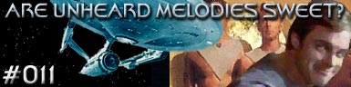

|

Escrito
por Worley Thorne
Um grupo avanado
desce na superfcie de um planeta que encontra-se dentro do
agrupamento de estrelas de Haydes. O grupo procura os restos da
USS Saint Louis, que caiu por l h algum tempo. Xon localiza o
dirio de bordo, e atravs de anlises com o tricorder fica
sabendo que a tripulao da St. Louis foi acometida de um
estranho delrio oriundo do planeta e isso os fez
entrar com a nave na atmosfera e jog-la contra a superfcie.
A tripulao da Enterprise acaba contraindo o mesmo delrio, e
Decker, que estava no grupo avanado, desaparece. Kirk tem de
voltar nave, porm quer ajudar nas buscas para encontrar seu
primeiro-oficial.
Decker foi preso por uma raa aliengena com poderes de induzir
iluses, e o fora a viver suas fantasias sexuais, uma aps a
outra. Os aliens tem a inteno de "manufaturar" hormnios
para que sua raa no morra e os terrqueos serviro de
fornecedores.
A misso de Kirk simples: resistir s tentaes e achar
Decker enquanto McCoy vai tentar descobrir a cura para o delrio
que aflige os tripulantes da Enterprise.
Curiosidades
 O escritor
deste episdio, Worley Thorne, tambm escreveu "Justice",
do 1 ano da Nova Gerao, evidenciando seu gosto por
incluir sexualidade nas histrias. O escritor
deste episdio, Worley Thorne, tambm escreveu "Justice",
do 1 ano da Nova Gerao, evidenciando seu gosto por
incluir sexualidade nas histrias.
Episdio
anterior | Prximo
episdio |